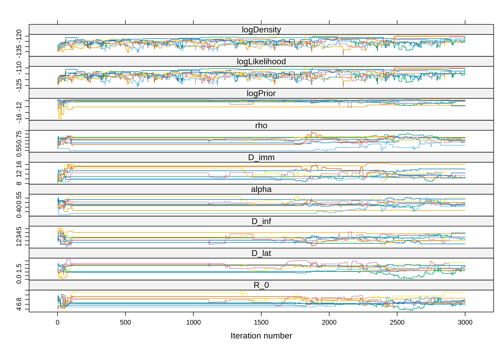
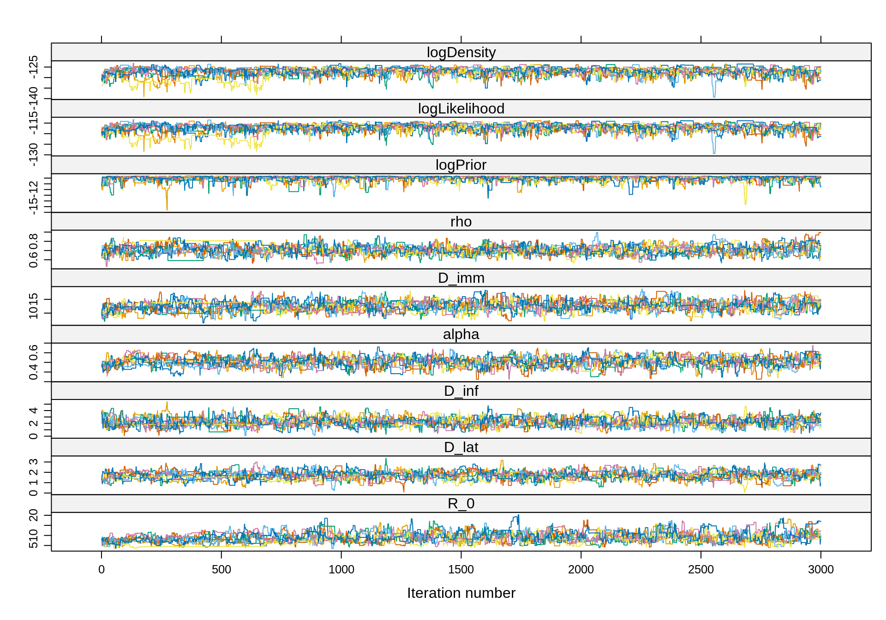
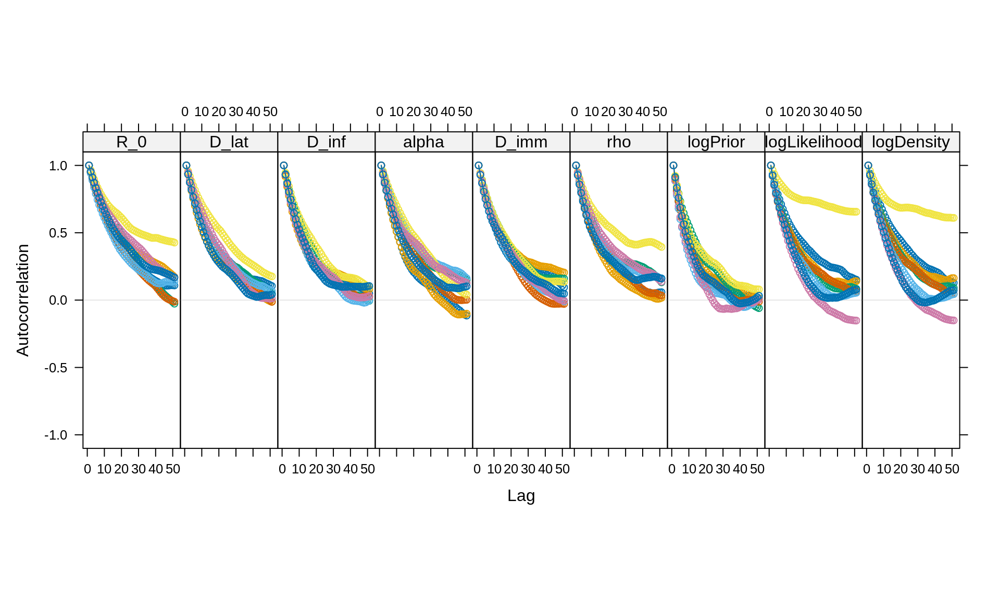
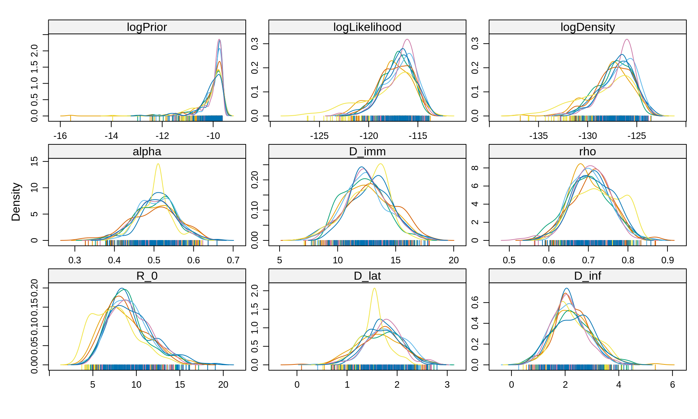
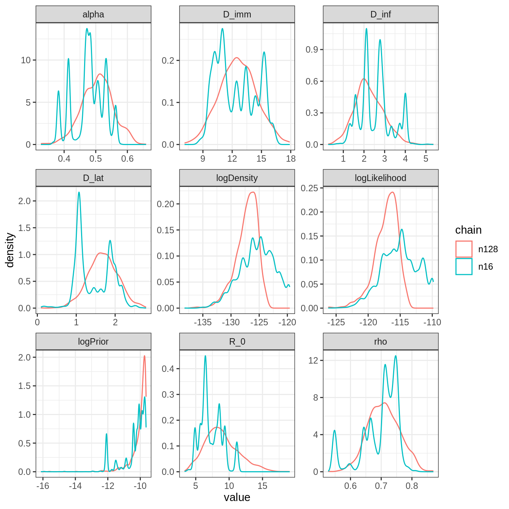
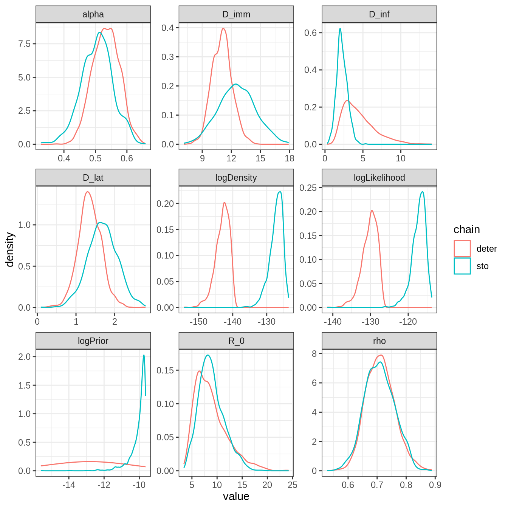
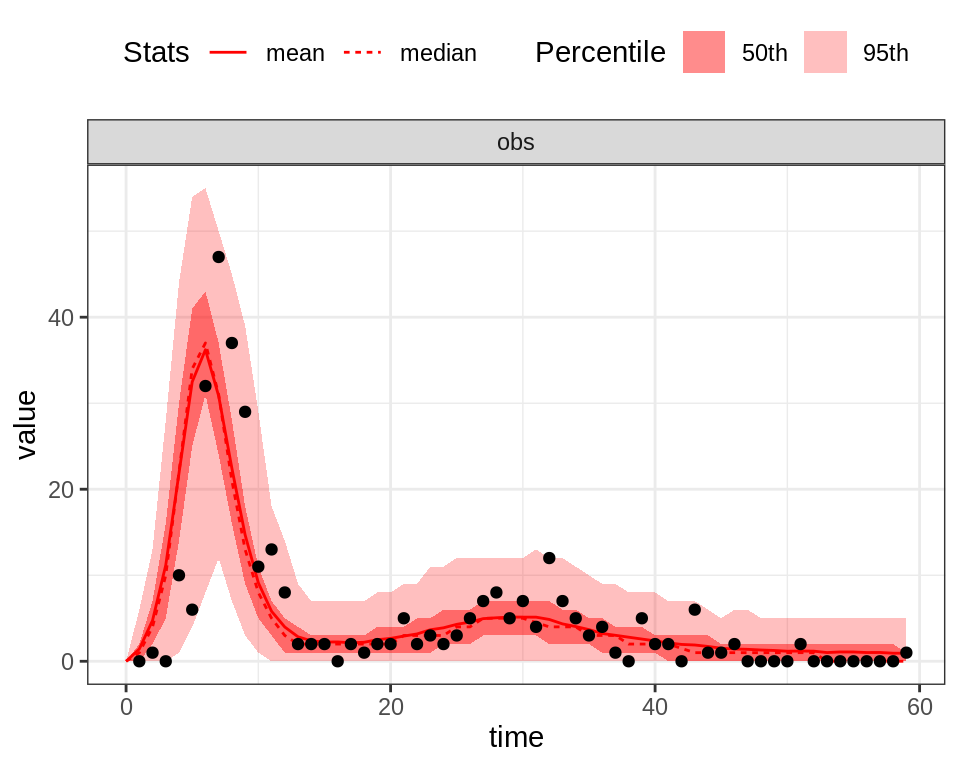
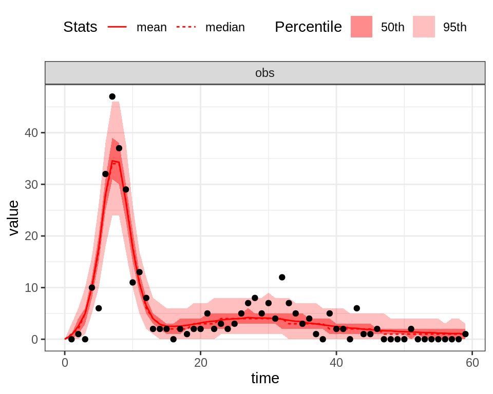

Full example: particle MCMC
Run a particle filter
The particle filter returns a Monte-Carlo estimate of the log-likelihood and, as every Monte-carlo estimate, its precision depends on the number of particles.
If you have too few particles then you will have a highly variable estimate of the log-likelihood and this will make the exploration of the likelihood surface quite imprecise. In addition, you might experience particle depletion (if you don’t know what that means just try to run a particle filter with a single particle).
If you have too many particles, then you will have an accurate estimate of your log-likelihood but it will be very time consuming so inefficient in practice.
In addition, the variability of the estimate might also depend on the region of the parameter space. For instance, in some region you might experience significant variability with 100 particles whereas in another region it might be fairly stable.
You can now return to the practical and try to think on a way to calibrate the number of particles.
Calibrate the number of particles
Ideally we want enough particles to obtain a fairly stable estimate of the log-likelihood in a reasonable computational time.
A simple calibration approach consists in plotting the mean, standard deviation and computational time of the log-likelihood estimate as a function of the number of particles. Although several parameters can be tested, we will use a theta close to the mean posterior estimate of the deterministic fit since it is likely to be the region of the parameter space we want to explore with the pMCMC.
knitr::read_chunk(here::here("scripts", "snippets", "calibrate-smc.r"))We ran this calibration algorithm and obtained the following results:
We can see how, with increasing number of particles, the standard deviation of the log-likelihood estimate decreases whilst the run time increases. Ideally we want to balance between a stable enough estimate of the log-likelihood to ensure good mixing and computation time. Various studies have shown that this is broadly the case at values of the standard deviation between 1 and 3 (see, e.g. Farnhead and Küsch, section 7.2.1). We can see that this happens somewhere around 100 particles in our example (indicated by a dashed red line). We can also see that the computational time increases linearly with the number of particles. Using 128 particles may be optimal if we want a stable estimator while minimising the computational time, but would take 2.3 days on the computer where this experiment was run to run the particle filter 10,000 times. Since every step of the pMCMC requires to run a particle filter, that means that it will take the same amount of time to generate 10,000 samples of the pMCMC. This is why you will often need a scientific computing cluster to run a pMCMC and make extensive use of parallelisation.
You can now return to the practical and set your pMCMC with 128 particles.
Setting the pMCMC
knitr::read_chunk(here::here("scripts", "snippets", "set-pmcmc.r"))You can now go back to the practical and try to run pMCMC with those settings.
Analyse a pMCMC with 16 particles
Here is an example of analysis of our 8 chains of 3000 iterations with 16 particles.
# load traces
data(pmcmcSeit4lInfoPrior)
# combine into a `mcmc.list` object
library("coda")
trace16 <- mcmc.list(lapply(pmcmcSeit4lInfoPrior16, function(chain) {
mcmc(chain$trace)
}))
# acceptance rate is way below the optimal 23%
1 - rejectionRate(trace16)
## R_0 D_lat D_inf alpha D_imm
## 0.05130877 0.05130877 0.05130877 0.05130877 0.05130877
## rho logPrior logLikelihood logDensity
## 0.05130877 0.05130877 0.05130877 0.05130877
# Let's have a look at the traces
library("lattice")
xyplot(trace16)
We can see that in several chains the sampler gets “stuck”, rendering our inference and any resulting calculations (e.g. of ESS) highly unreliable.
With so few particles, the likelihood estimate is very noisy and the exploration of the parameter space is not efficient. That said, the theoretical properties of the pMCMC guarantee that the chain will converge to the true posterior, even with 1 particle. Of course, this will take a lot of iterations so in practice it might be more efficient to spend more time computing the likelihood (i.e. having more particles) in order to reduce the number of iterations.
You can now return to the practical and analyse a pMCMC with much more particles that we ran for you.
Analyse a pMCMC with 128 particles
Here is an example of analysis of our 8 chains of 3000 iterations with 128 particles.
# combine into a `mcmc.list` object
library("coda")
trace <- mcmc.list(lapply(pmcmcSeit4lInfoPrior128, function(chain) {
mcmc(chain$trace)
}))
# acceptance rate is near optimal
1 - rejectionRate(trace)
## R_0 D_lat D_inf alpha D_imm
## 0.1988996 0.1988996 0.1988996 0.1988996 0.1988996
## rho logPrior logLikelihood logDensity
## 0.1988996 0.1988996 0.1988996 0.1988996
# Note that the combined ESS is 2 times higher than with 16 particles
effectiveSize(trace)
## R_0 D_lat D_inf alpha D_imm
## 520.0792 711.3816 861.4712 709.9831 712.1860
## rho logPrior logLikelihood logDensity
## 718.5242 1056.8813 771.8884 700.4612
# Let's have a look at the traces
library("lattice")
xyplot(trace)
As in the analysis with 16 particles, the burn-in period is relatively short. However, with 128 particles the chains mix much better. We can carefully choose the burn-in period with plotEssBurn.
# Actually, it looks like no burn-in is needed:
plotEssBurn(trace)
# What about autocorrelation?
acfplot(x = trace, lag.max = 50)
# Let's keep 1 iteration every 20
traceThin128 <- burnAndThin(trace, thin = 20)
# Let's plot the posterior densities
densityplot(x = traceThin128)
All 8 chains seems to have converged to the same posterior, which are smoother than with 16 particles. Let’s compare the combined posterior densities with that obtained with 16 particles
plotPosteriorDensity(list(n16 = trace16, n128 = traceThin128))
Although the posterior distributions are similar, those with 128 particles are smoother and more representative thanks to higher ESS. Note the different location of the mode of \(R_0\), which is shifted to the left with 16 particles. This is because 1 of the 8 chains with 16 particles shows a posterior with much lower \(R_0\) (see figure above), whereas the remaining 4 seems to have converged to the same distribution as the pMCMC with 128 particles.
Finally, note that the log-likelihood is overestimated with 16 particles, which can be problematic for model selection as we would overestimate the fit of the model.
Overall, this analysis confirms that the pMCMC works even with 16 particles but that it will require much more iterations to achieve the same posterior as the pMCMC with 128 particles. Although the latter takes more time at each iteration, it provides more better samples on short-runs. A good strategy is therefore to run many short chains in parallel with 128 particles. The chains start at different initTheta near the mode of the deterministic posterior, and are then combined to increase the overall ESS.
You can now return to the practical and proceed to the last section of this session.
Stochastic vs deterministic fit
Here we compare the combined traces of the deterministic SEIT4L model (2 chains of 50000 iterations) with those obtained with the stochastic version (8 chains of \(3000\) iterations). Both analysis have assumed informative priors for \(D_\mathrm{lat}\) and \(D_\mathrm{inf}\) .
# load, burn and thin the deterministic fit
# create mcmc object
library("coda")
data(mcmcTdcDeterLongRun)
trace1 <- mcmc(mcmcSeit4lInfoPriorTheta1$trace)
trace2 <- mcmc(mcmcSeit4lInfoPriorTheta2$trace)
# combine in a mcmc.list
trace <- mcmc.list(trace1, trace2)
# burn and thin as the chain with uniform prior (see above sections)
traceDeter <- burnAndThin(trace, burn = 5000, thin = 40)
# compare posterior density
plotPosteriorDensity(list(deter = traceDeter, sto = traceThin128))
Overall, the posterior distributions are quite different. This is especially true for \(R_0\) and \(D_{imm}\). In addition, the discrepancy in the posterior distribution of the log-likelihood seems to indicate that the stochastic model fits much better. We can quantify this by computing the DIC of the stochastic SEIT4L model.
# combine all traces in a data frame
library("dplyr")
library("purrr")
traceCombined <- bind_rows(map(traceThin128, as.data.frame))
# take the mean of theta
thetaBar <- colMeans(traceCombined[seit4lStoch$thetaNames])
print(thetaBar)
## R_0 D_lat D_inf alpha D_imm rho
## 8.8950674 1.6844288 2.2466477 0.5051892 12.5774892 0.7084080
# compute its log-likelihood
initState <- c(S = 279, E = 0, I = 2, T1 = 3, T2 = 0, T3 = 0, T4 = 0, L = 0, Inc = 0)
logLikeThetaBar <- my_particleFilter(seit4lStoch, thetaBar, initState, data = fluTdc1971,
nParticles = 128)
print(logLikeThetaBar)
## [1] -113.8204
logLikeThetaBarDeter <- dTrajObs(seit4lDeter, thetaBar, initState, data = fluTdc1971,
log = TRUE)
print(logLikeThetaBarDeter)
## [1] -176.2187
# and its deviance
dThetaBar <- -2 * logLikeThetaBar
print(dThetaBar)
## [1] 227.6408
# the effective number of parameters
pD <- var(-2 * traceCombined$logLikelihood)/2
print(pD)
## [1] 6.883178
# and finally the DIC
dic <- dThetaBar + 2 * pD
print(dic)
## [1] 241.4072In the previous session, we found that the DIC of the deterministic SEIT4L model was equal to 265. The difference of 20 indicates that the stochastic model should strongly be preferred to the deterministic model.
We can visually check this result by plotting the posterior fit of each model:
# take the mean posterior estimates of the deterministic model
x <- summary(traceDeter)
thetaBarDeter <- x$statistics[seit4lDeter$thetaNames, "Mean"]
plotFit(seit4lStoch, thetaBar, initState, data = fluTdc1971, nReplicates = 1000)
plotFit(seit4lDeter, thetaBarDeter, initState, data = fluTdc1971, nReplicates = 1000)
Despite the fact that the deterministic model seems to better capture the first peak of the epidemic, the stochastic model better explains the variability of the observed time-series. In particular, the 95% CI of the stochastic model captures almost all the observed data points, even during the first peak.
You’ve already finished? Why not go further?